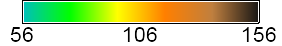
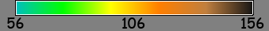
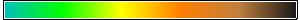
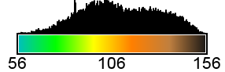

Note that one can use category maps as input, but r.out.legend will still create a smooth legend (by setting the -f flag, see d.legend).
The user may create a horizontal legend by making the box wider than it is tall. Note that for vertical legends labels are placed to the right of the legend box. For horizontal legends the text will be places below the legend.
The -d flag is used to display a histogram distribution along side the legend. For vertical legends, the histogram will be placed left of the legend; if horizontal, it will be placed above the legend bar. The histogram is 1.75 x the width (or height if horizontal) of the legend bar. This thus adds to the final width of the output image. Note that the statistics are calculated on the current computational region settings set by g.region. The default range however covers the entire natural bounds of the input map. If the histogram appears empty, check your region settings.
The script is a wrapper of d.legend. For detailed explanations of the different options, see the manual pages of this functions. To find out the fonts available on your system, you can run d.font -l. For a more interactive way to generate legend images, you can also try ps.map.
With file type set to 'png', the png driver is used to create the image. An alternative way to create a png image file is to set as file type 'cairo' and provide an output file name with as extension '.png'. This will use the cairo driver to generate the png image. One advantage of the cairo driver is that it uses anti-aliasing, which might give nicer results (smoother lines and numbers). Compare the output for example 1 and 4.
The default resolution is 300 px/inch (ppi), except when the unit is set to px, in which case the default resolution is set to 96 ppi.
If the output image is in png or jpg format, the addon will attempt to set the print resolution of the image so that other programs, such as Libreoffice or Word document, know the intended size of the image. It uses the Python Imaging Library (PIL) to do so. If not installed this step will silently be skipped. However, note that the dimensions of the image (in the user-defined unit, and based on the user-defined image resolution) will be printed to the console.
The range option lets the user define the limits of the legend. Note however that the color scale will remain faithful to the values as defined with r.colors.
The Cairo driver generates PNG, BMP, PPM, PS, PDF or SVG images using the Cairo graphics library. The image format is selected from the extension of the output file. For this option to work, GRASS has to be configured with CAIRO support (if you compile GRASS yourself, use --with-cairo when configuring GRASS).
r.out.legend raster=elevation file=r_out_legend_1.png filetype=png \
dimensions=4,0.4 labelnum=3 fontsize=7 unit="cm" resolution=150

The dimensions (width and height) of the image are printed to the console.
---------------------------- File saved as r_out_legend_1.png The image dimensions are: 285px wide and 49px heigh at a resolution of 150 ppi this is: 4.826 cm x 0.8382 cm ----------------------------
r.out.legend raster=elevation file=r_out_legend_2.png filetype=png \
dimensions=300,20 labelnum=3 fontsize=10 unit="px" \
font=comic bgcolor=grey

r.out.legend raster=elevation file=r_out_legend_3.png filetype=png \
dimensions=300,20 labelnum=3 fontsize=0 unit="px"

r.out.legend raster=elevation file=r_out_legend_4.png filetype=cairo \
dimensions=4,0.4 labelnum=3 fontsize=7 unit="cm" resolution=150
The dimensions (width and height) of the image:
---------------------------- File saved as r_out_legend_4.png The image dimensions are: 286px wide and 50px heigh at a resolution of 150 ppi this is: 4.84293333333 cm x 0.855133333333 cm ----------------------------
r.out.legend raster=elevation file=r_out_legend_5.png filetype=cairo \
dimensions=4,0.4 labelnum=3 fontsize=7 unit="cm" resolution=150 -d

The dimensions (width and height) of the image:
---------------------------- File saved as r_out_legend_5.png The image dimensions are: 286px wide and 92px heigh at a resolution of 150 ppi this is: 4.84293333333 cm x 1.56633333333 cm ----------------------------